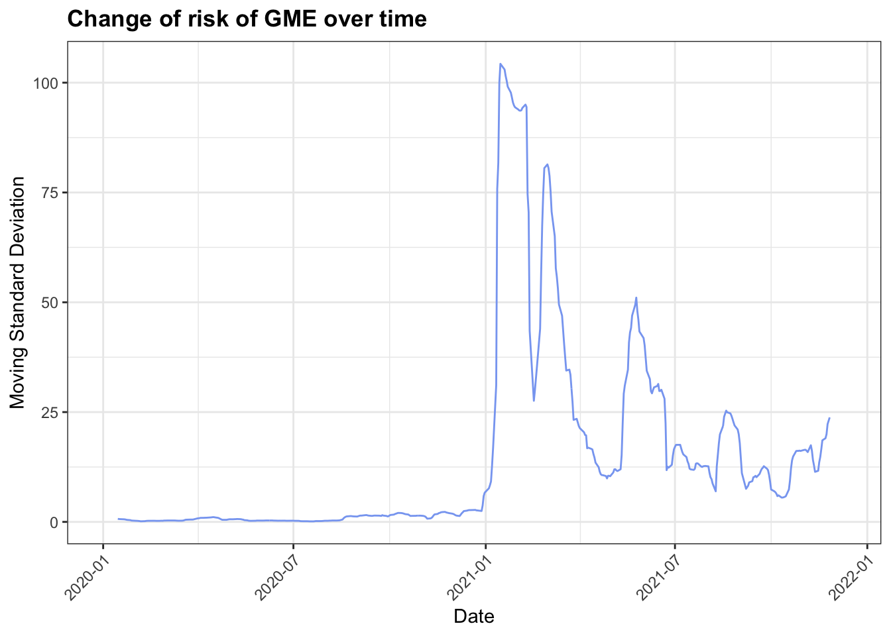
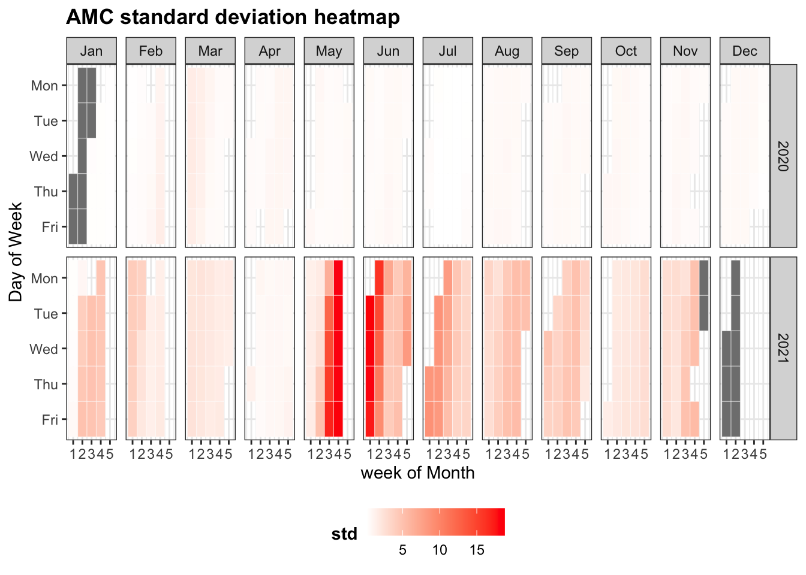

Chapter 5 Results
5.1 What’s the impact of r/wallstreetbet?
5.1.1 General Public’s interests on Google
5.1.1.1 Interest over time

The above two plots display the interest on the relative topics during the time period 2020-11-15 to 2021-11-15. Numbers represent search interest relative to the highest point on the chart for the given region and time. A value of 100 is the peak popularity for the term. A value of 50 means that the term is half as popular. A score of 0 means there was not enough data for this term.
5.1.1.2 Interest by subregion
5.2 r/WallStreetBets Reddit Post Data
5.2.1 Reddit post data overview
5.2.1.1 What are the most popular words?
5.2.2 Sentiment analysis on Reddit posts regarding GME

Above plot analyzes if the sentiments on r/WallStreetBets had any impact on GME’s stock price.
5.2.3 Stock Data and Information
5.2.3.1 Stock Data Plot
The most Representative WSB stocks are GME and AMC. Also, these 2 stocks are the top 2 most widely discussed stocks in WallStreetBet sub-reddit analysed in Chapter 3 - cleaning. Therefore, we choose these 2 stocks and show the stock price and volume change in the past one year.
## [1] "GME"## [1] "AMC"From the above 2 graphs, we can clearly see that there are 2 waves of the WSB stocks, which are indicated by the sudden spike of the stock price as well as the sudden increase of the volume. These 2 waves are around January - Feburary and May - June period respectively. These 2 graphs actually double confirm with our previous claims.
Also, the gray and red line in the price graph is the Bollinger Bands, which is the price level at 1 standard deviation level above and below the sample moving average of the price, which is able to capture the volatility of the stock. Generally, Bollinger bands is used to check whether prices are relatively high or low as comparing to the historical price. Here, we can see that for the beginning of the 2 waves, the price of both GME and AMC break the Bollinger upper bands, which suggests that the price of these 2 stocks are extremely high as comparing to the historical data. However, the Bollinger bands also adjusted themselves quickly to accommodate the sudden price change, so we can see that the price of these 2 stocks fall back within the Bollinger bands after a short period of time.
5.2.3.2 Stock Risk Assessment
While the previous 2 graphs mainly focus on the price and volume aspects, there is one more aspect that are very important to the stock, which is risk. Risk can be measured by the standard deviation. Here, we would like to explore how the risk of the 2 stocks change before and after the 2 waves, which are GME and AMC respectively. Thus, we need to calculate the moving standard deviation of the 2 stocks over time.
Here, we take the closing price to be the one calculating the moving standard deviation since closing price is the most representative price among all the 5 prices. For each month, it is about 4 weeks and the stock market only opens in weekdays, thus, there are about 4*5 = 20 days with stock data every month. Therefore, we set the moving window to be 20, which is roughly about 1 month time.
Also, we take the data since the start of last year because we want to see whether there is any difference in terms of the risk of GME and AMC by comparing the moving standard deviation before and after the 2 waves.
## [1] "GME"
## [1] "AMC"From the 2 graphs above, we have following observations:
Around Jan/Feb and May/June period, there are huge changes for both
GMEandAMCin terms of risk.GMEhas relatively higher risk thanAMCasGME’s moving standard deviation reached more than 100 while the highest moving standard deviation ofAMCis about 13.The risk of
GMEis highest in the first wave during Jan/Feb period while the risk ofAMCis highest in the second wave during May/Jun period. This can be supported by the general knowledge thatGMEis the leading stock in the 1st wave whileAMCis the leading stock in the 2nd wave.
5.2.3.3 Most Popular Stocks
Besides studying about the 2 most representative stocks in WSBs, which are GME and AMC respectively, we could also study some other WSB stocks, which are not as popular as GME and AMC but they are still very representative and have received a lot of public attention.
Therefore, we extend our study to the top 10 mentioned stocks in the posts of WallStreetBets sub-reddit group. These 10 stocks has been identified in the Chapter 3 - Cleaning, which are: GME, AMC, BB, NOK, SND, NAKD, PLTR, CLOV, RETA, MAR, respectively.
Now, we can plot bar chart to show the count of posts that have mentioned about the stock for each stock.


From the graph above, we can see that GME and AMC are the dominant 2 dominant stocks that were discussed in WallStreeBets sub-reddit, which appears in around 2.8154% and 2.7915% of the total posts respectively. However, `BB, NOK, SND and the other stocks have also received some public attention, which are worthwhile to include them in the future analysis to get a bigger and clearer picture regarding the WSB stocks.
5.2.3.4 Time Series of the Top 10 Stocks
Now, we want to study how the top 10 stocks’ prices move over the past one year. Again, since the closing price is the most representative price among all the 5 prices, we just use closing price to show the price change over time.